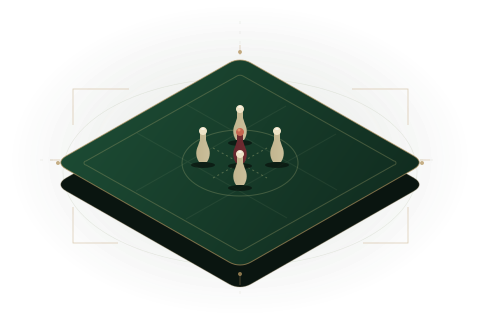

Un assistente. Sul tuo PC.
Chiedi come usare il programma o consulta i dati del campionato. L’assistente AI lavora in locale, senza inviare le domande a un servizio AI cloud.
AI locale · OllamaLa passione incontra l’organizzazione
Dal primo sorteggio all’ultimo punto.
Il gestionale per i campionati di biliardo e boccette, pensato per chi tiene insieme la serata.
Gratuito · Windows 10 / 11 · Nessun abbonamento
Dal sorteggio al podioOgni fase, nello stesso posto.
A casa. In sede. Anche offline.Il campionato viaggia con te.
Il tuo PC, i tuoi datiDatabase e assistente AI locali.
01 Una regia completa
Iscrizioni, incastri, messaggi dell’ultimo minuto. Finalmente un ambiente di lavoro che conosce il ritmo di un campionato a batterie.
Batterie da 4 o 8, singoli o coppie. Sorteggi con regole, sedi e disponibilità. Tagliandi pronti da stampare o inviare.
Appello, ritardi, punteggi e qualificazioni. Segui la serata senza perdere il filo, fino alla fase finale.
Classifiche di stagione, statistiche e albo d’oro. Ogni risultato trova il suo posto, anche a campionato concluso.
Dall’impostazione alla chiusura: le fasi del campionato, il prossimo passo e gli strumenti che ti servono, in un’unica vista.
02 L’anima resta quella del circolo
Il bello non è gestire un foglio di calcolo. È aprire la sala, ritrovare le persone e sentire il primo punto sul panno.
BiliardoOS mette in ordine quello che c’è dietro. Così chi organizza può tornare a esserci, davvero.
Portalo nel tuo circolo03 Tecnologia discreta. Aiuto concreto.
Un aiuto quando serve. Il controllo dove deve stare: nelle tue mani.

Chiedi come usare il programma o consulta i dati del campionato. L’assistente AI lavora in locale, senza inviare le domande a un servizio AI cloud.
AI locale · OllamaTagliandi e comunicazioni via WhatsApp o email. Invii programmati, stato della coda e orari di silenzio: sai cosa parte e quando.
WhatsApp · Email · PDFDatabase locale, backup e blocco dell’app. Collega casa e portatile quando ne hai bisogno, oppure gestisci la serata offline.
Backup · Casa / portatileInternet è necessario per download, aggiornamenti e servizi di comunicazione o sincronizzazione attivati. Il lavoro quotidiano sul campionato può restare offline.
04 La prossima serata comincia qui
Niente account BiliardoOS da creare.
Nessun abbonamento. Solo il tuo prossimo campionato.
Windows 10 / 11 · 64 bit
Scarica gratuitamenteVersione Base gratuita da scaricare e usare.
Sei su un altro dispositivo? Il programma si installa sul tuo PC Windows.
Il pulsante porta all’ultima versione pubblicata nel repository del progetto.
Apri il file BiliardoOS-Setup e segui la configurazione guidata al primo avvio.
Inserisci sedi e giocatori. La guida e l’assistente sono già dentro l’app.
Windows mostra un avviso all’installazione? Leggi prima le indicazioni su SmartScreen.
Prima di cominciare
Per il resto, c’è una comunità
con cui parlarne.
La versione Base di BiliardoOS è gratuita da scaricare e usare, senza un abbonamento al software. Non è open source: tutti i diritti sono riservati. Le condizioni complete sono nella licenza del progetto.
Per campionati amatoriali di biliardo e boccette tra bar, circoli e associazioni: batterie da 4 o 8 giocatori, singoli o coppie, seguite dalla fase finale. Il sorteggio tiene conto delle regole configurate, come sedi, disponibilità e teste di serie.
Sì, per il lavoro quotidiano: sorteggio, convocazioni stampate, appello, risultati e classifiche. Internet serve per scaricare l’app e il modello AI, ricevere gli aggiornamenti e usare funzioni online come l’invio di WhatsApp ed email.
Il database del campionato e l’assistente AI risiedono sul PC. L’AI locale usa Ollama e richiede il download iniziale di un modello, scelto in base all’hardware. Le comunicazioni e le opzioni di sincronizzazione, quando attivate, utilizzano i rispettivi servizi esterni.
L’app desktop è disponibile per Windows 10 e 11 a 64 bit. Il telefono può essere usato per le funzioni dedicate ai risultati tramite il collegamento locale, configurato dal PC. Non è un’app nativa per Android, iPhone o macOS.
L’installer attualmente distribuito non è firmato digitalmente e Windows può mostrare un avviso SmartScreen. Scarica solo dalle release del repository del progetto e controlla il file con la protezione di Windows prima di procedere. Un avviso, da solo, non prova che un file sia sicuro o pericoloso: se non sei certo della provenienza, non eseguirlo.
Trovi altri dettagli nelle istruzioni di installazione.
L’app controlla le nuove versioni all’avvio; puoi farlo anche da Impostazioni → Aggiornamenti. Gli aggiornamenti sono preceduti da un backup e non vengono installati durante una serata di gara aperta. Per domande usa Discussions; per segnalare un problema apri una segnalazione su GitHub. Il programma è fornito senza garanzie, secondo la licenza.